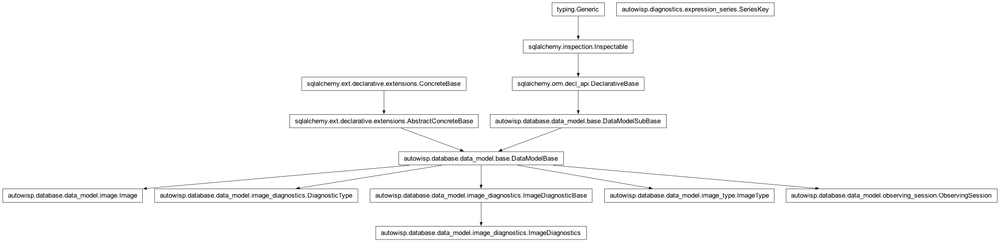
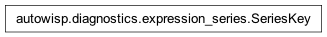

autowisp.diagnostics.expression_series module
Class Inheritance Diagram

Values for one series of images, read from the project database.
Tier 2 of the expression layer: it knows the project database and nothing
else. Above it, the browser interface adds Django and a way of editing the
library; below it, autowisp.diagnostics.expressions knows what an
expression means and has no database at all. This module is the join
between them – it turns a session, an image type and the channels a series
binds into the {name: {channels: array}} that tier 1 evaluates against.
Everything here is built on one canonical image list per session and image
type, ordered by Julian date, with NaN wherever a value is not
recorded. Alignment is then structural: index i is the same image in every
array, so two quantities need no join to be plotted against each other, and
an aggregate is taken over one population rather than over a mixture of
frame types.
The list deliberately does not depend on the channel, which is what makes reading one diagnostic in several of them cheap: the columns arrive side by side against the same images, so a quantity comparing channels is ordinary arithmetic rather than a join.
- class autowisp.diagnostics.expression_series.SeriesKey(session_id, image_type, channels, quantile_name=None)[source]
Bases:
_SeriesKeyFields
What one series is: a population of images and a binding.
The image type is part of the key because a session holds frames of several types and a diagnostic rarely means the same thing across them – some are only defined for object frames, and one recorded for both would have its aggregates taken over a mixture, making
nanmedian(bg_center[0])a median of object and flat frames together.channelsholds one channel per parameter of what the series draws, in the order those parameters are numbered: one for an ordinary diagnostic, several where an expression compares channels, and none for a quantity over the time alone.Every function here takes one of these rather than the fields separately, so a caller cannot pair a channel with the wrong session by getting an argument order wrong.
quantile_nameis the odd one out: it says whichpixel_q*a series stands for when a caller has expanded thepixel_quantilesfamily into one series per member, and by the time values are read the quantity it selects is already a concrete name. Nothing in this module consults it – as nothing but the image list consults the channels – but it belongs to the identity of the series.- static __new__(cls, session_id, image_type, channels, quantile_name=None)[source]
Build the key, refusing a bare string where a tuple belongs.
__new__rather than a check further on because it has to coerce as well: bindings reach this from a JSON post as a list, and a list in that field makes the key unhashable, which is how it is used everywhere.The string case is worth refusing loudly because it fails silently and selectively:
channels="R"leaveschannels[0]reading"R"and joins to the same id, so a one-character channel behaves correctly, while"G1"becomes the two channelsGand1somewhere much later.
- property channel
The one channel a whole series can be said to belong to, or
"".There is not really such a thing once a series can bind several – that is the point of
channels– but two things need one anyway, and neither is about the data: the frame a click on a point opens, and the colour the series is drawn in. Both take the first, for want of a better answer. A series binding no channel at all has none to give.
- class autowisp.diagnostics.expression_series._SeriesKeyFields(session_id: int, image_type: str, channels: tuple, quantile_name: str = None)[source]
Bases:
NamedTupleThe fields of a
SeriesKey, kept apart only to be checked.typing.NamedTupleprohibits__new__and__init__in a class body, so the check below cannot go there; deriving from this is what givesSeriesKeysomewhere to put it.
- autowisp.diagnostics.expression_series._as_arrays(rows)[source]
Return
(image_ids, jd_values)for rows starting(id, jd, …).
- autowisp.diagnostics.expression_series._count_images(matching, required, per_channel, db_session)[source]
Count images whose diagnostic rows satisfy matching, per series.
The shared half of the two counting questions below, which differ only in what they match, how many matches an image owes, and whether a channel is part of the answer or fixed by the caller.
Counting rows rather than distinct diagnostics is sound for both, because the unique index on
(image_id, channel, diagnostic_id)admits no duplicate: an image satisfying n of what was asked for contributes exactly n rows to its group.- Parameters:
matching – The
WHEREselecting the rows that count.required (int) – How many matched rows an image must have.
per_channel (bool) – Whether an image has to satisfy the requirement within one channel – which also makes the channel something the result varies over – or may satisfy it across several.
db_session – An active SQLAlchemy database session.
- Returns:
- ``(session_label, session_id, image_type[, channel],
count)`` tuples, the channel present only when per_channel.
- Return type:
- autowisp.diagnostics.expression_series._diagnostic_values_query(series_key, names, channels)[source]
Return the statement reading names in channels for one series.
Separate from running it so that what it asks the database for can be inspected without a database: the predicates below are what keep this affordable on an archive too large to scan, and they are this module’s to get right, unlike which index a particular server then chooses.
- autowisp.diagnostics.expression_series._of_one_type(series_key)[source]
Return the WHERE terms selecting one session’s frames of one type.
- autowisp.diagnostics.expression_series.count_images_with_all(needed, db_session)[source]
Count images holding all of needed, per (session, type, channel).
What a slot may be bound to: the channels a quantity could be read in, and how many images each would draw. Deliberately spans every observing session, that being what the series table lists – so there is no one session to anchor it to, and its cost is proportional to the images carrying the diagnostic, which Scaling names as a standing limit rather than something an index could remove.
- Parameters:
needed (set) –
DiagnosticTypenames that must all be recorded for an image to count, in the same channel. An empty set means no quantity constrains the result, which only happens when every quantity istime_quantity; nothing is plottable then.db_session – An active SQLAlchemy database session.
- Returns:
(session_label, session_id, image_type, channel, count)tuples.
- Return type:
- autowisp.diagnostics.expression_series.count_images_with_channels(requirements, db_session)[source]
Count images holding every
(diagnostic, channel)pair, per series.What a binding actually draws, once the channels are chosen – the exact question, where
count_images_with_all()answers the looser one that fills the dropdowns. The difference is a line of SQL and the whole of the meaning: an image counts when its rows cover every pair between them, so one requirement may be met in R and another in B, which is what a quantity comparing channels needs.- Parameters:
requirements –
(diagnostic_name, channel)pairs that must all be recorded for an image to count. Deduplicated here, since the two axes of one plot may read the same diagnostic in the same channel. Empty means nothing constrains the result.db_session – An active SQLAlchemy database session.
- Returns:
(session_label, session_id, image_type, count)tuples.No channel among them: the binding names the channels, so they are not what the rows vary over.
- Return type:
- autowisp.diagnostics.expression_series.get_canonical_images(series_key, db_session)[source]
Return
(image_ids, jd_values)for one session and image type, by JD.Every array built for this series is padded onto this list, so index i is the same image in each of them and alignment needs no join.
The channel of series_key is deliberately not used – the list is the same for every channel – but the image type is: frames of different types are different populations, and mixing them would put a flat frame and an object frame in one array for an aggregate to average over.
- autowisp.diagnostics.expression_series.get_diagnostic_values(series_key, needed, db_session)[source]
Return the wanted diagnostics for one series, NaN-padded and aligned.
One query, and nothing to match up afterwards. A cross join pairs every wanted diagnostic with every image of the series, and an outer join attaches the values, leaving
NULLwhere nothing was recorded – so the padding is what the database returns rather than something assembled from it. The unique index on(image_id, channel, diagnostic_id)is what makes that sound: no image contributes two rows for one diagnostic in one channel, so the result is exactly one row per image per name.Several channels at once, still one query. An expression comparing channels needs the same diagnostic read more than once, so there is one outer join per distinct channel, each with the channel pinned. That keeps the result a rectangle – the joins only widen it, adding a value column per channel rather than rows – and keeps every probe on the unique index, whose second column is exactly what is being pinned.
Being a rectangle is what lets the values become arrays in one step: a column is read out whole and reshaped into one row per name, rather than accumulated name by name. Each block’s name is taken from its first row rather than from a sorted list of the names asked for, so nothing depends on the database’s collation ordering strings the way Python does.
The image ids come back alongside, because the same query already carries them and a caller that needs them should not have to ask again – nor risk a second query disagreeing about the order of images sharing a
jd. The dates are not returned separately:time_quantityis asked for by name like anything else, and arrives in the dictionary.- Parameters:
series_key (SeriesKey) – The series to read the values of. Its channels are not consulted; what to read in is needed, since a quantity may be bound to channels other than the series’ own.
needed (dict) –
{name: set of channel tuples}, fromget_needed_values(). May includetime_quantityat the empty tuple, which is taken from the image row rather than fromimage_diagnostics.db_session – An active SQLAlchemy database session.
- Returns:
- dict:
{name: {channels: array}}, keyed exactly as needed asked, every array the length of the canonical image list and
NaNwhere nothing is recorded. A name nodiagnostic_typehas is allNaN.
numpy.ndarray: The image ids, in canonical order.
- dict:
- Return type:
- autowisp.diagnostics.expression_series.get_quantity_values(series_key, wanted, expressions, db_session)[source]
Return the quantities of one series as the table bound them.
wanted holds both axes rather than one, because resolving them one at a time would waste the two properties this arrangement exists for: the diagnostics both axes read are fetched in one query for their union, and an instantiation the two share is evaluated once.
The image ids come from the same query as the values, so no two results have to agree about the order of images sharing a Julian date.
- Parameters:
series_key (SeriesKey) – The series to read the values of.
wanted (dict) –
{quantity: set of channel tuples}, each tuple holding one channel per parameter of that quantity. A set of them because the two axes may be one quantity read in two channels, which is how a diagnostic is compared between them.expressions (dict) – The library,
{name: expression}.db_session – An active SQLAlchemy database session.
- Returns:
- dict:
{quantity: {channels: array}}, all of the same length, and unmasked – dropping the non-finite entries is the caller’s business, since the mask has to be taken across both axes at once and the image ids masked with it.
numpy.ndarray: The image ids that length runs over.
- dict:
- Return type:
- Raises:
PipelineError – If a quantity names nothing, if the expressions reference each other in a cycle, or if a binding is the wrong length for what it binds.